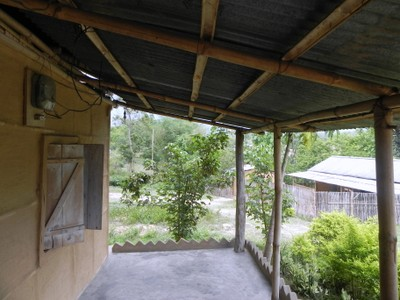

Bamboo [WBB]
Hollow-stemmed plant. Its stiff tubular stems, sometimes up to 150-200mm diameter, are used as a building material. It is commonly used as split and woven construction, in the form of trusses and frames. Bamboo construction has been traditionally used in South-East Asia (India), East Asia (China), South Pacific, and to certain extent in Central and South America (e.g. Costa Rica).

Bamboo frame construction on stilts found in flood- and earthquake-prone areas such as Assam, India (People in Centre)

Bamboo frame construction, Assam, India (People in Centre)